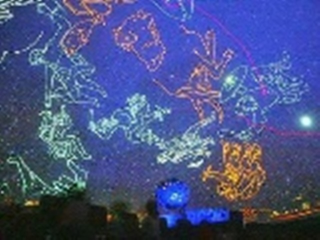
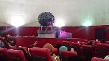
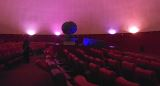
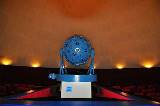
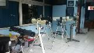
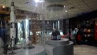

 <div class="upage hidden black" id="planet">
            <div class="upage-outer">
                <div class="uib-header header-bg container-group inner-element uib_w_65" data-uib="layout/header" data-ver="0">
                    <h2>Wisata Jakarta</h2>
                    <div class="widget-container wrapping-col single-centered"></div>
                    <div class="widget-container content-area horiz-area wrapping-col left"></div>
                    <div class="widget-container content-area horiz-area wrapping-col right">
                        <button class="btn widget uib_w_74 d-margins btn-default mustard" data-uib="twitter%20bootstrap/button" data-ver="1" id="bckpl"><i class="glyphicon glyphicon-chevron-left" data-position="icon only"></i>
                        </button>
                    </div>
                </div>
                <div class="upage-content ac0 content-area vertical-col left" id="page_90_97"></div>
                <!-- tab -->
                <div class="container">
                    <h3>Planetarium</h3>
                </div>

                <div id="exTab2" class="container">
                    <ul class="nav nav-tabs">
                        <li class="active">
                            <a href="#17" data-toggle="tab">Beranda</a>
                        </li>
                        <li><a href="#18" data-toggle="tab">Informasi</a>
                        </li>
                        <li><a href="#19" data-toggle="tab">Fasilitas</a>
                        </li>
                        <li><a href="#20" data-toggle="tab">Peta</a>
                        </li>
                    </ul>

                    <div class="tab-content ">
                        <div class="tab-pane active" id="17">
                            <h3>Deskripsi Monumen Nasional</h3>
                            <br>
                            <center>
                                
                            </center>

                            <p>Planetarium dan Observatorium Jakarta dibuka untuk umum pertama kalinya pada tanggal 1 Maret 1969. Sebelumnya diresmikan oleh Gubernur DKI Jakarta, Ali sadikin pada tanggal 10 Nopember 1968. Planetarium dan Observatorium Jakarta
                                adalah salah satu dari tiga wahana simulasi langit yang dimiliki Indonesia, selain yang ada di Kutai Kalimantan Timur dan Surabaya Jawa Timur. Tempat ini merupakan wisata edutaiment yang dihadirkan untuk Anda penyuka dunia
                                astronomi termasuk di dalamnya adalah para pelajar. Pasalnya, tempat ini dapat menyajikan pertunjukan atau peragaan simulasi perbintangan dan benda-benda langit lainnya. Dengan menggunakan teropong, pengunjung dapat mengamati
                                secara langsung terjadinya gerhana bulan, gerhana matahari dan komet.</p>

                            <div class="container">
                                <div id="myCarousel15" class="carousel slide" data-ride="carousel">
                                    <!-- Indicators -->
                                    <ol class="carousel-indicators">
                                        <li data-target="#myCarousel" data-slide-to="0" class="active"></li>
                                        <li data-target="#myCarousel" data-slide-to="1"></li>
                                        <li data-target="#myCarousel" data-slide-to="2"></li>
                                    </ol>

                                    <!-- Wrapper for slides -->
                                    <div class="carousel-inner" role="listbox">
                                        <div class="item active">
                                            
                                        </div>

                                        <div class="item">
                                            
                                        </div>

                                        <div class="item">
                                            
                                        </div>

                                        <div class="item">
                                            
                                        </div>

                                        <div class="item">
                                            
                                        </div>

                                        <div class="item">
                                            
                                        </div>

                                        <div class="item">
                                            
                                        </div>

                                        <div class="item">
                                            
                                        </div>

                                        <div class="item">
                                            
                                        </div>

                                    </div>

                                    <!-- Left and right controls -->
                                    <a class="left carousel-control" href="#myCarousel15" data-slide="prev">
                                        <span class="glyphicon glyphicon-chevron-left"></span>
                                        <span class="sr-only">Previous</span>
                                    </a>
                                    <a class="right carousel-control" href="#myCarousel15" data-slide="next">
                                        <span class="glyphicon glyphicon-chevron-right"></span>
                                        <span class="sr-only">Next</span>
                                    </a>
                                </div>
                            </div>

                            <!-- end slider -->

                            <h3>Ruang Planetarium</h3>
                            <h4><p>Ruang Pameran</p></h4>
                            <p>Planetarium dan Observatorium Jakarta ini dilengkapi oleh ruang pameran. Di mana ruangan tersebut menampilkan berbagai benda-benda angkasa termasuk pajangan baju antariksa yang digunakan untuk mengarungi angkasa, termasuk ketika
                                mendarat di bulan. Selain itu, ada juga pameran foto-foto serta keterangan lengkap dari berbagai bentuk galaksi. Di sini teori-teori galaksi dikumpulkan, kemudian dipamerkan beserta dengan tokoh-tokoh dibalik teori tersebut.</p>
                            <h4><p>Ruang Teater Pertunjukan Bintang</p></h4>
                            <p>Planetarium dan Observatorium Jakarta juga memiliki ruang teater yang digunakan untuk memutar film yang berkaitan dengan astronomi. Beberapa film itu berjudul Pembentukan Tata Surya yang menceritakan tentang berbagai teori
                                percobaan yang dilakukan untuk menyingkap tabir pembentukan tata surya, Planet Bumi Biru yang menceritakan mengenai bumi dan asal usulnya, Galaksi Kita Galaksi Bima Sakti menceritakan tentang galaksi bima sakti dan masih
                                banyak yang lainnya. Ruang teater ini sangat unik dan megah. Berbeda dengan teater yang lainnya, teater di tempat ini memiliki layar yang terbentang di langit-langit atap ruangan. Layar itu nampak luas dan megah. Pasalnya
                                layar itu berbentuk cembung. Desain layar yang unik itu juga diimbangin dengan desain kursi yang sedikit berbeda. Sandaran kursi dapat didorong ke belakang hingga posisi duduk menatap ke atas.</p>
                            <h4><p>Ruang Observatorium</p></h4>
                            <p>Planetarium Jakarta telah dilengkapi dengan ruang khusus untuk melihat langsung benda langit melalui beraneka jenis teleskop (teropong bintang) yang dipasang didalamnya. Pada kompleks bangunan Planetarium Jakarta yang paling
                                depan di lantai paling atas terdapat observatorium yang berisi teleskop ASKO, jenis reflektor Cassegrainian (memakai cermin) berdiameter 31 cm. Dengan usia yang sudah puluhan tahun, walaupun kondisi optiknya masih prima,
                                teleskop ini sekarang lebih sering digunakan secara manual ataupun untuk sarana pembelajaran. Teleskopnya memiliki medan pandang sempit dan ujud fisiknya cukup besar. Bentuk bangunannya yang unik adalah pada atapnya dengan
                                struktur setengah bola yang dapat dibuka-tutup dan berputar secara horizontal ke segala arah.</p>
                        </div>

                        <div class="tab-pane" id="18">
                            <div class="container">
                                <div class="col-md-6 col-sm-6">

                                    <div class="panel-group wrap" id="accordion" role="tablist" aria-multiselectable="true">
                                        <div class="panel">
                                            <div class="panel-heading" role="tab" id="heading14">
                                                <h4 class="panel-title">
        <a role="button" data-toggle="collapse" data-parent="#accordion" href="#collapse14" aria-expanded="true" aria-controls="collapse14">
         Waktu Operasional
        </a>
      </h4>
                                            </div>
                                            <div id="collapse14" class="panel-collapse collapse in" role="tabpanel" aria-labelledby="heading14">
                                                <div class="panel-body">
                                                    <h4>Senin - Jum'at</h4>
                                                    <p>08.00 - 15.30 WIB</p>
                                                    <br>
                                                    <h4>Sabtu - Minggu</h4>
                                                    <p>08.00 - 13.30 WIB</p>
                                                </div>
                                            </div>
                                        </div>
                                        <!-- end of panel -->

                                        <div class="panel">
                                            <div class="panel-heading" role="tab" id="heading15">
                                                <h4 class="panel-title">
        <a class="collapsed" role="button" data-toggle="collapse" data-parent="#accordion" href="#collapse115" aria-expanded="false" aria-controls="collapse16">
          Tiket Masuk
        </a>
      </h4>
                                            </div>
                                            <div id="collapse115" class="panel-collapse collapse" role="tabpanel" aria-labelledby="heading15">
                                                <div class="panel-body">
                                                    <!-- list info -->
                                                    <div class="list-group">

                                                        <a href="#" class="list-group-item list-group-item-success">

                                                            <h4>Anak - anak</h4>
                                                            <p>Rp 3.500</p>
                                                            <br>
                                                            <h4>Dewasa</h4>
                                                            <p>Rp 7.000</p>
                                                        </a>
                                                    </div>
                                                </div>
                                            </div>
                                        </div>
                                        <!-- end of panel -->

                                    </div>
                                    <!-- end of #accordion -->

                                </div>
                                <!-- end of wrap -->

                            </div>
                            <!-- end of container -->
                        </div>

                        <div class="tab-pane" id="19">
                            <h3>Fasilitas Umum</h3>
                            <br>
                            <!-- tab toilet planet-->
                            <div class="container">
                                <h1></h1>
                            </div>
                            <div id="exTab1" class="container">
                                <ul class="nav nav-pills">
                                    <li class="active">
                                        <a href="#1g" data-toggle="tab">Toilet / Restroom</a>
                                    </li>
                                    <li><a href="#2g" data-toggle="tab">Tempat Ibadah</a>
                                    </li>

                                </ul>

                                <div class="tab-content clearfix">
                                    <div class="tab-pane active" id="1g">
                                        <h3></h3>
                                        <iframe src="toilet26.html" width="100%" height="700px" frameborder="80" style="border:0" allowfullscreen=""></iframe>
                                    </div>
                                    <div class="tab-pane" id="2g">
                                        <h3></h3>
                                        <iframe src="musola26.html" width="100%" height="700px" frameborder="80" style="border:0" allowfullscreen=""></iframe>
                                    </div>
                                </div>
                            </div>

                        </div>

                        <div class="tab-pane" id="20">
                            <h3>Petunjuk Arah Planetarium</h3>
                            <br>
                            <iframe src="planet.html" width="100%" height="700px" frameborder="80" style="border:0" allowfullscreen=""></iframe>
                        </div>
                    </div>
                </div>
            </div>
        </div>
        <!-- end page planet -->